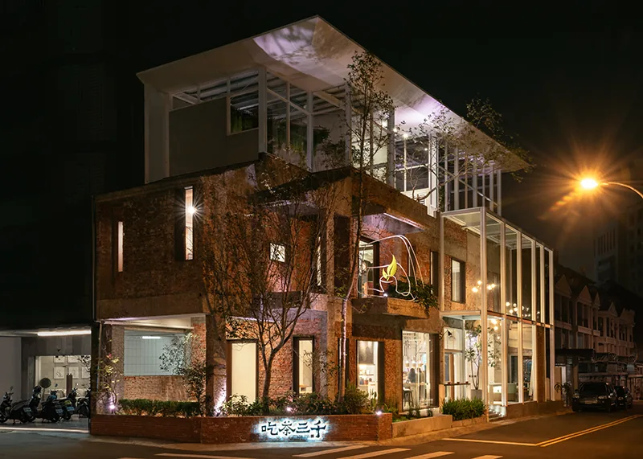
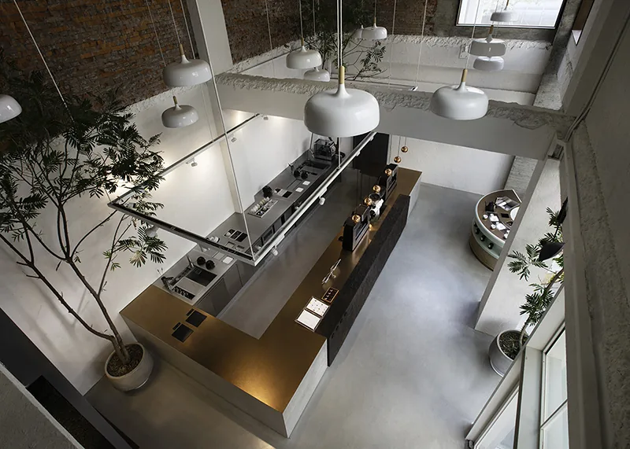
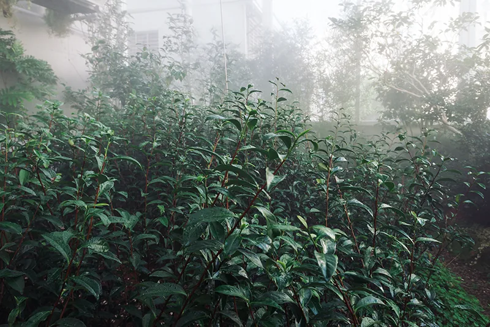

04 — Art & Craft
A designer's fantasy, made real.
We believe a space with cultural and aesthetic character is tied to the history of its building. Our first concept store in Taiwan was reconstructed from a 40-year-old building — rather than demolish it, we kept its original design as a way of living alongside history.




The Sky Tea Garden
Bringing the tea mountain
to the city.
We refresh our minds in nature, so we had a crazy idea: bring tea trees from the mountain into the city. Tea thrives at 75–80% humidity with 1,800–3,000 mm of annual rainfall, so we built a misty greenhouse that simulates high-altitude conditions.
Controlled temperature, high humidity and plenty of sunlight help the trees flourish — and raise the nitrogen and aroma content of their leaves. The garden is our promise to the tea, and to you.